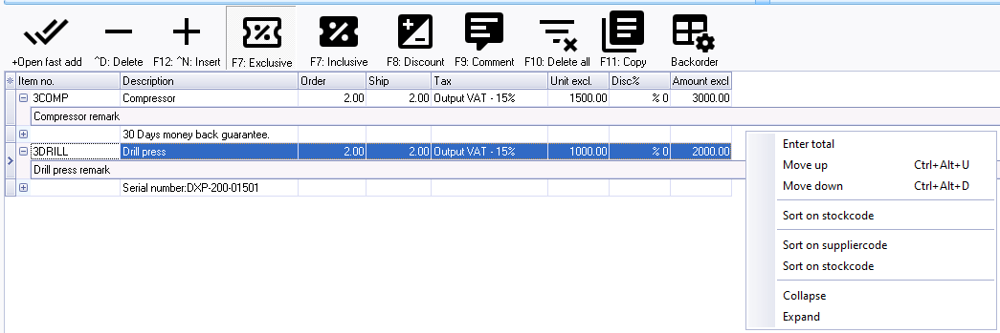
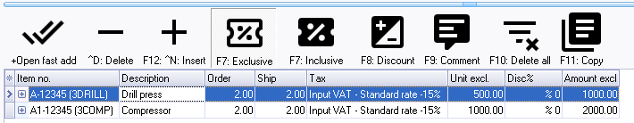
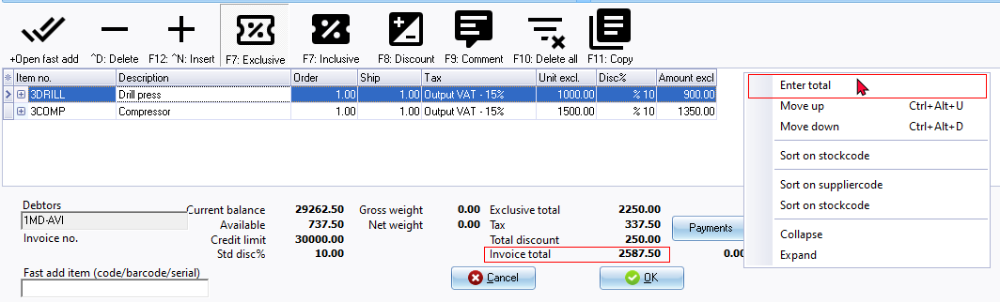
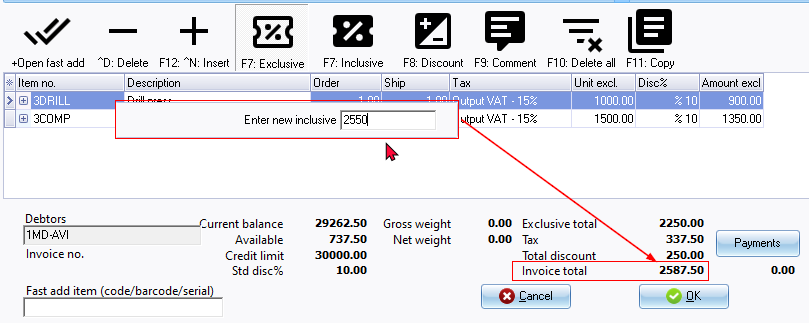
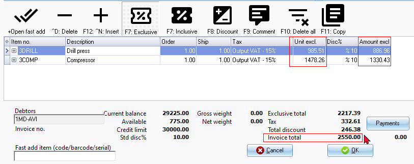
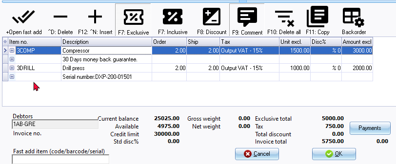
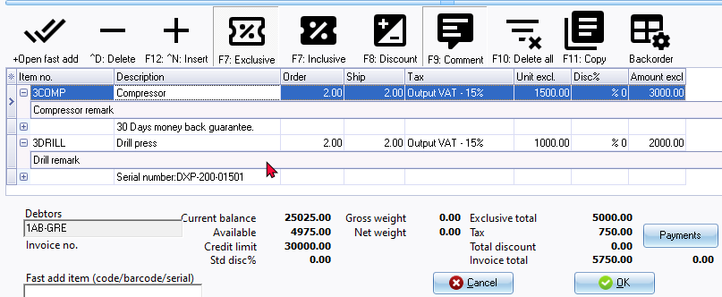
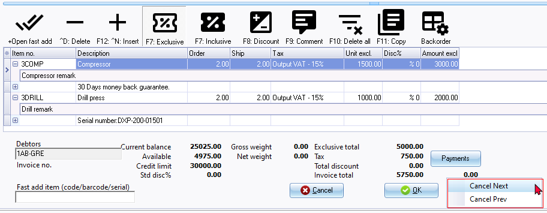

Document entry form - Context menu
Context menu options on Document lines
In the document entry form, you may right-click on the document lines area to access the options on the context menu:

Move up, Move down and Sort on stock code
Change the sequence of transactions and/or comments - in unposted documents. Once you have entered transactions and/or comments, you may need to change the sequence of the document lines. You may have entered a comment in the incorrect document line, or need to sort the document lines by moving an item and/or comment down or up, and or sort the items by stock code, etc. This will change the sequence of transactions and/or comments on document layout files when printing or reprinting documents.
Sort on suppliercode
If the "Preferred supplier 1" was selected and a "Supplier stock code" is entered for a stock item on a Stock form, the Supplier (vendor) item codes will be added in the "Item no." column in the document lines when you use the "Create purchase on default supplier 1" context menu option of the "Document entry" list screen.

You may use the "Sort on suppliercode" to change the sequence in which the items are listed.
|
|
You may also use the "Move up, Move down" and "Sort on stock code" options to move individual items, according to your requirements. |

Enter total
Enter a new inclusive total for an unposted document. The "Enter total" option is mostly used to allow rounding discount.
Right-click anywhere in the Document lines or on the Document footer section of the "Document entry" screen, and select the "Enter total" option on the context menu.

Enter a new total (inclusive of Tax (VAT/GST/Sales tax) for the Invoice on the "Enter new inclusive total" screen and press the Enter key.

The new Invoice total will be displayed. The Inclusive and Exclusive amounts (as well as the Tax) for each item will automatically be recalculated accordingly and adjusted.

This will automatically recalculate and adjust the inclusive totals and tax amounts proportionally for all items included in the document.
Collapse / Expand
If Remarks is added to a Stock item (additional to Comments) in the document lines is displayed when opening a selected Document entry form.
On the context menu, you may select "Collapse" to hide the remarks or "Expand" to show the remarks in the document lines.
Document lines - Collapsed (hide remarks)

Document lines - Expanded (show remarks)

Context menu options on Document footers
In the document entry form, you may right-click on the document footer area to access the options on the context menu:

If you click on the "Cancel Next" or "Cancel Prev" options on the context menu, an error message is displayed:
Please save or cancel your document first!
Click OK on to close the error message.
You need to close the Document entry form by clicking on the OK or Cancel buttons in the document footer:
- OK button will save any changes to the unposted Document entry form and close it. The OK button will not be available on posted Document entry forms.
- Cancel button will discard any changes to the unposted Document entry form and close it. If a posted Document entry form is active the Cancel button will close the Document entry form.